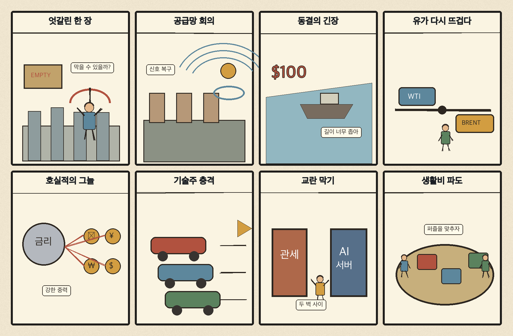
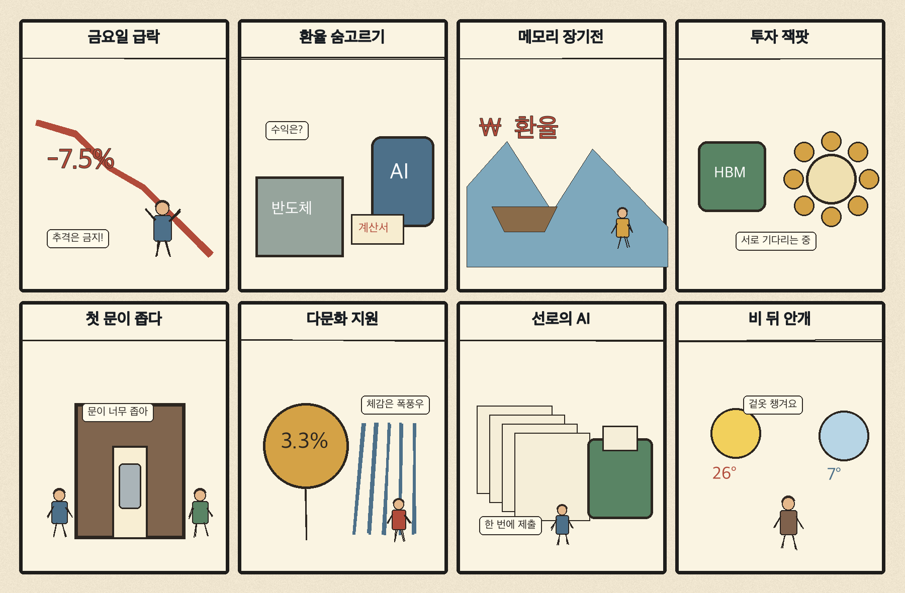

01
아마존 · 232.53→240.35달러 · +3.36%
내용요약 시가 대비 +3.36%로 조사군 최상위였으며 대형기술주 매도 속에서도 상대적 강세를 보였습니다.
예상여파 전자상거래·클라우드의 방어력을 보여주지만 기술주 전반의 변동성 확대는 유의해야 합니다.
MORNING_BRIEFING_20261031
작성 시각: 2026-10-31 06:33 KST · 직전 미국 정규장과 2026-10-31 KST 당일 공개 기사 기준
직전 미국 정규장인 10월 30일 뉴욕증시는 다우 -1.09%, S&P 500 -1.82%, 나스닥 -2.86%로 동반 하락했습니다. AI 투자 수익성 우려와 인텔 급락이 기술주 매도를 키웠습니다. 전일 KOSPI도 종가 기준 -3.48%, 시가 대비 -0.51%로 밀린 만큼 다음 거래일 국내장은 반도체 대형주와 외국인 수급의 안정 여부가 핵심입니다.
| 지수 | 종가 | 등락률 | 한국 증시 시사점 |
|---|---|---|---|
| 다우존스 | 51,770.31 | -1.09% | 경기민감주 위험회피 |
| S&P 500 | 7,580.07 | -1.82% | AI·반도체 투자심리 부담 |
| 나스닥 종합 | 25,437.00 | -2.86% | AI·반도체 투자심리 부담 |
AI 수익성 우려와 반도체 매도로 위험회피가 강해졌습니다.
전일 5,730.74로 마감했고 시가 대비 -0.51%였습니다.
중동 긴장으로 국제유가가 올라 수입물가 부담이 커졌습니다.
공식 추천 없이 주말 뉴스와 월요일 갭 위험을 관찰합니다.
10월 30일 보고서는 AI 투자비 우려와 필수 수급·컨센서스·유사 조건 표본 부족으로 공식 추천을 내지 않았습니다. 사후에 종목을 추가하지 않습니다.
| 시장 | 종가 | 등락률 | 기준 |
|---|---|---|---|
| KOSPI | 5,730.74 | -3.48% | 10월 30일 · 시가 대비 -0.51% |
| KOSDAQ | 724.38 | -3.83% | 10월 30일 · 시가 대비 -1.81% |
| 다우존스 | 51,770.31 | -1.09% | 미국 10월 30일 정규장 |
| S&P 500 | 7,580.07 | -1.82% | 미국 10월 30일 정규장 |
| 나스닥 종합 | 25,437.00 | -2.86% | 미국 10월 30일 정규장 |
아마존이 시가 대비 +3.36%로 조사군 최상위였습니다.
스포티파이 +3.21%, 액센츄어 +2.64%로 방어했습니다.
팔란티어 -4.98%, 크라우드스트라이크 -4.07%였습니다.
마벨 -4.36%, 인텔 -3.79%, 어플라이드머티리얼즈 -2.03%였습니다.
내용요약 시가 대비 +3.36%로 조사군 최상위였으며 대형기술주 매도 속에서도 상대적 강세를 보였습니다.
예상여파 전자상거래·클라우드의 방어력을 보여주지만 기술주 전반의 변동성 확대는 유의해야 합니다.
내용요약 시가 대비 +3.21% 상승해 서비스 플랫폼 종목 중 강했습니다.
예상여파 구독형 서비스의 차별화가 부각됐지만 단일일 상승을 추격 신호로 보기는 어렵습니다.
내용요약 시가 대비 -4.98%로 조사군 최하위권을 기록했습니다.
예상여파 AI 소프트웨어 고평가 논쟁이 국내 성장주에도 위험회피로 전이될 수 있습니다.
내용요약 시가 대비 -4.36% 하락하며 AI 인프라·반도체 매도 영향을 받았습니다.
예상여파 국내 반도체 공급망 심리에 단기 부담이며 월요일 갭 하락 뒤 수급 확인이 필요합니다.
내용요약 시가 대비 -3.79%였고 당일 보도 기준 종가 기준 낙폭은 더 크게 부각됐습니다.
예상여파 미국 반도체 투자심리 악화가 국내 대형 반도체와 장비주 변동성을 키울 수 있습니다.
토요일은 한국 증시 휴장입니다. 금요일 나스닥 -2.86%, S&P 500 -1.82%와 AI·반도체 매도는 월요일 국내 반도체·인터넷 성장주의 갭 하락 위험을 높였습니다. 여기에 WTI +2.08%는 수입물가 부담입니다. 다만 원·달러 환율이 1,334.3원으로 마감한 점은 완충 요인입니다. 월요일에는 개장 직후 추격보다 외국인 현·선물 수급과 KOSPI 5,600선 지지 여부를 먼저 확인하는 편이 낫습니다.
오늘은 추천 없음 — 현금 관망
토요일 휴장이고, 전일까지의 외국인·기관 수급, 컨센서스 변화와 30건 이상 유사 조건 표본을 함께 확보해 종합점수 75점·상승확률 60%·예상 손익비 1.5를 모두 검증할 종목이 없습니다. 주말 사이 뉴스와 월요일 갭 위험도 반영해야 합니다.
관심 연결종목 국산 AI칩·HBM·사이버보안·정유는 관찰 대상일 뿐 매수 추천이 아닙니다. 월요일 장 초반 갭 변동 종목은 추격매수를 금지합니다.
WTI 상승과 사우디 드론·미사일 요격 이후 추가 긴장을 봅니다.
미국 기술주 매도가 국내 HBM과 성장주로 번지는지 확인합니다.
추가 인상 예고가 엔화·원화와 아시아 자금 흐름에 미치는 영향을 봅니다.
KOSPI 급락 뒤 외국인 현·선물 수급과 지수 지지력을 점검합니다.
핵심 요약: 국내 AI칩에는 대규모 투자금이 유입됐고 메모리 업황 기대도 이어졌습니다. 동시에 유럽 벤처자금의 AI 쏠림과 미국 기술주 급락은 수익성·고평가 논쟁을 키웠습니다. 오늘은 자금조달 규모보다 양산, 고객 계약, 전력효율과 매출 전환을 구분해 봐야 합니다.
내용요약 국내 AI 반도체 스타트업 퓨리오사AI가 역대 최대 규모인 8,200억원 투자 라운드를 성사시켰다는 당일 보도입니다.
예상여파 국산 AI칩의 양산·고객 확보에 자금 여력이 생기지만 실제 매출 전환과 전력효율 검증이 다음 관문입니다.
내용요약 유럽 벤처자금이 AI 기업으로 빠르게 집중되며 자본 배분의 규칙이 바뀌고 있다는 당일 분석입니다.
예상여파 AI 투자 쏠림은 성장기업의 자금조달을 돕는 한편 비AI 분야의 자금경색과 고평가 위험을 키울 수 있습니다.
내용요약 메모리 업황과 HBM 경쟁을 바탕으로 삼성전자의 내년 반도체 전망을 짚은 뉴시스 당일 기사입니다.
예상여파 메모리 공급 규율과 HBM 수율이 실적을 좌우하며, 업황 기대와 실제 계약을 구분한 접근이 필요합니다.
내용요약 샌디스크가 낸드 공급난에도 증설을 서두르지 않고 고부가 제품에 집중한다는 당일 보도입니다.
예상여파 보수적 공급 전략이 낸드 가격을 지지할 수 있지만 수요 둔화가 재개되면 재고 부담이 다시 커질 수 있습니다.
내용요약 일본 정부가 사이버보안 대책에 미국 AI 개발사와의 협력을 강화하는 방안을 넣을 예정이라는 보도입니다.
예상여파 AI 모델과 공공 보안의 결합이 빨라지며 데이터 주권·조달 기준·보안 검증이 핵심 정책 쟁점이 될 수 있습니다.
핵심 요약: G20은 공급망·식량·무역 교란 대응을 논의했지만 러시아 참석을 둘러싼 외교 갈등이 드러났습니다. 일본은행의 추가 인상 신호와 중동 긴장에 따른 유가 상승이 아시아 금융시장과 생활물가의 새 변수입니다.
내용요약 애틀랜타 G20 외교장관회의에서 러시아 외무장관 참석을 둘러싼 유럽의 반발로 단체사진 촬영이 무산됐다는 연합뉴스 보도입니다.
예상여파 주요국 공조의 균열이 전쟁·제재 논의를 어렵게 하고 에너지와 방산 시장의 위험 프리미엄을 유지시킬 수 있습니다.
내용요약 미 국무장관이 G20에서 식량시장, 공급망과 무역 교란에 공동 대응해야 한다고 촉구했다는 VOA 당일 보도입니다.
예상여파 공급망 안정 의제가 강화되면 핵심 원자재와 식량 조달의 다변화 압력이 커질 수 있습니다.
내용요약 일본은행이 기준금리를 1.25%로 동결하면서도 추가 인상 가능성을 열어뒀다는 당일 보도입니다.
예상여파 엔화와 일본 국채 변동성이 커지면 아시아 자금 흐름과 원화 환율에도 영향을 줄 수 있습니다.
내용요약 중동 긴장이 이어지며 WTI가 2.08% 상승했다는 이투데이 당일 속보입니다.
예상여파 유가 상승은 정유사 마진에 우호적일 수 있지만 항공·운송비와 한국의 수입물가에는 부담입니다.
내용요약 사우디 주도 연합군이 리야드의 드론과 남부의 미사일을 요격했다고 밝혔다는 뉴스1 보도입니다.
예상여파 홍해·걸프 항로의 군사적 긴장이 높아지면 에너지와 해상운임 변동성이 확대될 수 있습니다.

핵심 요약: 원·달러 환율은 1,334.3원으로 마감했지만 국내 증시는 큰 폭으로 하락했습니다. AI·경력직 중심 채용은 청년의 첫 일자리 문을 좁히고 있으며, 다문화 가족 지원 확대와 토요일 비·안개도 생활 현안으로 살펴봅니다.
내용요약 달러인덱스 하락 속 서울 외환시장에서 원·달러 환율이 1,334.3원으로 마감했다는 당일 보도입니다.
예상여파 원화 안정은 외국인 수급과 수입물가에 완충 요인이지만 글로벌 기술주 급락이 위험회피를 다시 키울 수 있습니다.
내용요약 청년 취업자가 47개월 연속 감소했고 AI 확산이 재정과 고용구조에 추가 압력을 준다는 뉴스핌 기획입니다.
예상여파 청년 소득과 소비 기반이 약해질 수 있어 직무 전환 교육과 첫 일자리 연결의 실효성이 중요합니다.
내용요약 기업의 경력직 선호와 AI 도입이 신입 채용 문을 좁히고 있다는 당일 보도입니다.
예상여파 초기 경력 형성의 단절이 장기 생산성 문제로 번지지 않도록 인턴·도제형 채용과 재교육 확대가 필요합니다.
내용요약 다문화 가족에 어린이집·주택청약 우선권과 주택담보대출 이자 지원이 제공된다는 조선일보 당일 기사입니다.
예상여파 정착 비용을 낮출 수 있지만 현장 접근성과 대상 기준의 형평성을 함께 점검해야 합니다.
내용요약 토요일 새벽 중부지방에 약한 비가 내리고 서울 낮 최고기온은 14도로 예상된다는 뉴스1 당일 예보입니다.
예상여파 비가 그친 뒤 짙은 안개와 쌀쌀한 기온에 대비해 교통안전과 체온 관리가 필요합니다.
